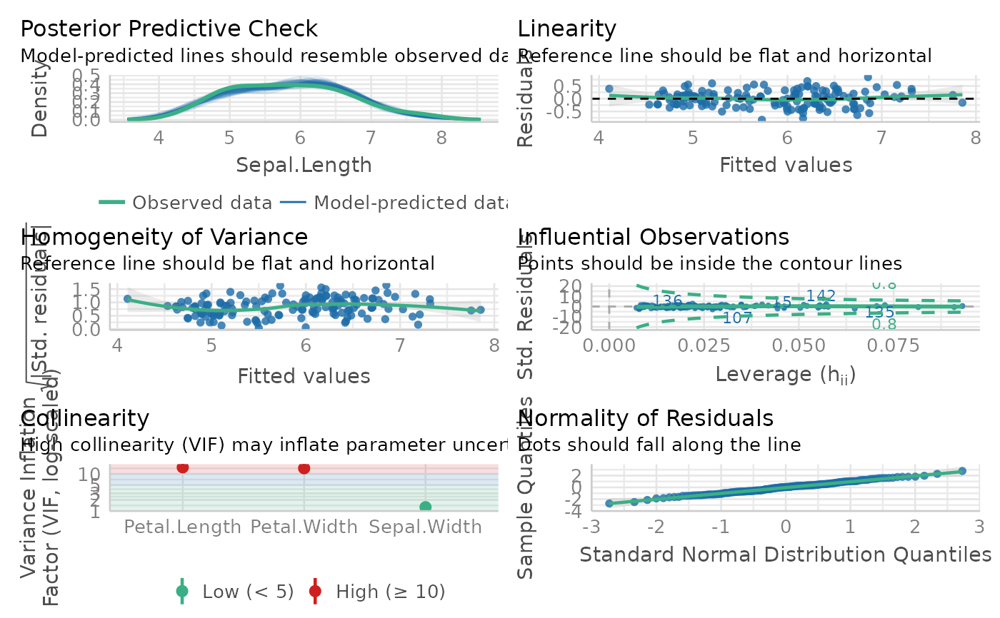

Model Summary for Mixed Effect Model
model_summary.Rd![[Stable]](figures/lifecycle-stable.svg)
The function will extract the relevant coefficients from the linear mixed effect models (see supported model below).
model_summary( model, streamlined_output = FALSE, round = 3, assumption_plot = FALSE, return_result = FALSE, quite = FALSE )
Arguments
| model | an object from nlme::lme, lmerTest::lmer, or lme4::glmer |
|---|---|
| streamlined_output | Only print model estimate and model performance. Default is |
| round | number of digit to round the values. |
| assumption_plot | Generate an panel of plots that check major assumptions. You can use this if the model summary show violation of assumption (those maybe unreliable due to the use of p-value which is sensitive to the sample size). In the background, it calls performance::check_model() |
| return_result | return the model estimates data frame. Default is |
| quite | suppress printing result. Default is |
Value
If return_result is TRUE, it will return a data frame with estimate, df, p_value, and the p-value significance.
Details
If you working with lm, fixed factor estimate is just the model estimate. It
References
Nakagawa, S., & Schielzeth, H. (2013). A general and simple method for obtaining R2 from generalized linear mixed-effects models. Methods in Ecology and Evolution, 4(2), 133–142. https://doi.org/10.1111/j.2041-210x.2012.00261.x
Examples
# I am going to show the more generic usage of this function # You can also use this package's built in function to fit the models # I recommend using the model_summary_with_plot to get everything # lme example lme_fit <- lme4::lmer("popular ~ extrav + sex + texp + (1 | class)", data = popular ) model_summary(lme_fit, assumption_plot = TRUE)#> Warning: Degree of freedom and p-value is extracted from lmerTest#> Model Summary #> Model Type = Linear Mixed Effect Model (fitted using lme4 or lmerTest) #> Outcome = popular #> Predictors = extrav, sex, texp, 1 | class #> #> Model Estimates #> ───────────────────────────────────────────── #> variable estimate DF p_value sig. #> ───────────────────────────────────────────── #> 1 (Intercept) 0.810 226.431 0.000 *** #> 2 extrav 0.454 1954.889 0.000 *** #> 3 sex 1.254 1948.303 0.000 *** #> 4 texp 0.088 101.627 0.000 *** #> ───────────────────────────────────────────── #> #> Model Performance #> ───────────────────────────────────────────────────────────────── #> AIC BIC R2_conditional R2_marginal ICC RMSE Sigma #> ───────────────────────────────────────────────────────────────── #> 1 4897.025 4930.630 0.672 0.508 0.333 0.751 0.769 #> ───────────────────────────────────────────────────────────────── #> #> Model Assumption Check #> #> OK: Model is converged #> OK: No singularity is detected #> Warning: Autocorrelated residuals detected (p < .001). #> OK: residuals appear as normally distributed (p = 0.602). #> OK: No outliers detected. #> OK: Error variance appears to be homoscedastic (p = 0.746). #> Error in bartlett.test.default(c(6.3, 4.9, 5.3, 4.7, 6, 4.7, 5.9, 4.2, : #> there must be at least 2 observations in each group #> OK: No multicolinearity detected (VIF < 5)#>#>#># lm example lm_fit <- lm(Sepal.Length ~ Sepal.Width + Petal.Length + Petal.Width, data = iris ) model_summary(lm_fit, assumption_plot = TRUE)#> Model Summary #> Model Type = Linear regression #> Outcome = Sepal.Length #> Predictors = Sepal.Width, Petal.Length, Petal.Width #> #> Model Estimates #> ───────────────────────────────────────────── #> variable estimate t_value p_value sig. #> ───────────────────────────────────────────── #> 1 (Intercept) 1.856 7.401 0.000 *** #> 2 Sepal.Width 0.651 9.765 0.000 *** #> 3 Petal.Length 0.709 12.502 0.000 *** #> 4 Petal.Width -0.556 -4.363 0.000 *** #> ───────────────────────────────────────────── #> #> Model Performance #> ────────────────────────────────────────────── #> AIC BIC R2 R2_adjusted RMSE Sigma #> ────────────────────────────────────────────── #> 1 84.643 99.696 0.859 0.856 0.310 0.315 #> ────────────────────────────────────────────── #> #> Model Assumption Check #> #> OK: Residuals appear to be independent and not autocorrelated (p = 0.790). #> OK: residuals appear as normally distributed (p = 0.943). #> OK: No outliers detected. #> Warning: Heteroscedasticity (non-constant error variance) detected (p = 0.035). #> Error in bartlett.test.default(c(5.1, 4.9, 4.7, 4.6, 5, 5.4, 4.6, 5, 4.4, : #> there must be at least 2 observations in each group #> Warning: Severe multicolinearity detected (VIF > 10). Please inspect the following table to identify high correlation factors. #> Multicollinearity Table #> ──────────────────────────────── #> Term VIF SE_factor #> ──────────────────────────────── #> 1 Sepal.Width 1.271 1.127 #> 2 Petal.Length 15.098 3.886 #> 3 Petal.Width 14.234 3.773 #> ────────────────────────────────